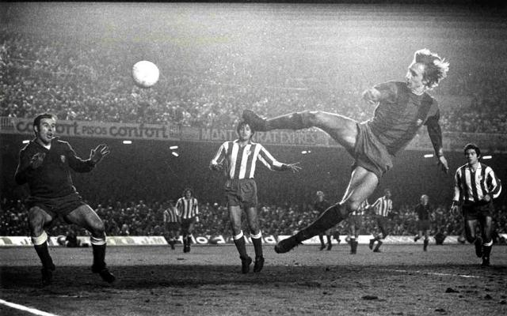

El Arquitecto del Fútbol Moderno

Johan Cruyff revolucionó el fútbol como jugador y como entrenador. Nacido en Ámsterdam, llegó al Barça en 1973 por un récord mundial de £2 millones, transformando inmediatamente al club y ganándose el apodo de "El Salvador" por sacar al equipo de su sequía de títulos.
Como jugador, inventó el "falso 9" y popularizó el "giro Cruyff". Como entrenador, creó el "Dream Team" y sentó las bases del estilo Barça con su filosofía de posesión, presión alta y fútbol ofensivo.
Su legado incluye la creación de La Masía moderna y conceptos como: "Jugar bien es más importante que ganar" y "En mis equipos el portero es el primer atacante".
Pep Guardiola lo definió: "Cruyff pintó la capilla, y nosotros solo hemos tenido que restaurarla".